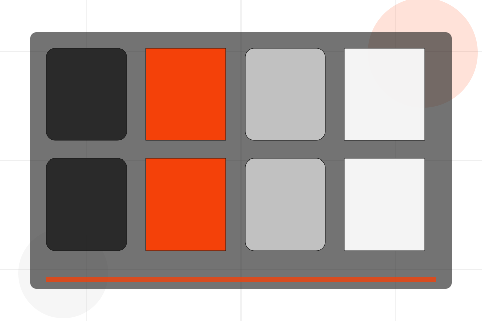
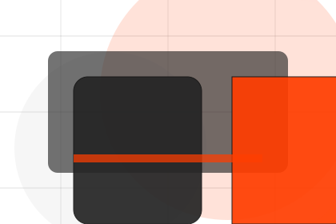
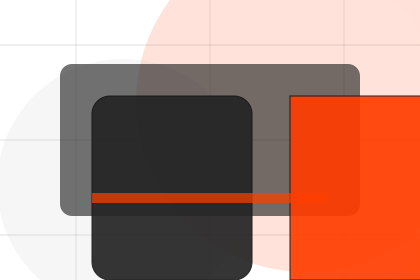
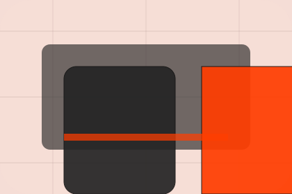

Club / 01
Club by Pulse
Club shaped for sports, fitness & recreation decisions.
Club opens as a clear sports decision hub: what Pulse offers, who it helps, why it matters, and which route to take first.
The first screen combines positioning, proof, primary action, and fast internal navigation, so people can act immediately or compare the rest of the club route with context.
Sports scopeCompare optionsRequest advice

Club / 02
Philosophy
Philosophy adds professional context to the club route, using the athletic product-program system structure to support progress and belonging before visitors choose a next step.
Pulse uses performance program cards and focused copy to make the decision easier to scan, aligning the section with progress and belonging rather than filling space.
Explore ClubPulse structures philosophy around context, judgment, and a clear next route so visitors can compare the block quickly before they join a class.
Join ClassClub / 04
Facilities
Facilities adds professional context to the club route, using the athletic product-program system structure to support progress and belonging before visitors choose a next step.
Pulse uses performance program cards and focused copy to make the decision easier to scan, aligning the section with progress and belonging rather than filling space.
Explore ClubContext
Facilities gives the page a specific angle instead of repeating the navigation label.
Judgment
The performance program cards show what to compare, what to avoid, and what matters most for sports, fitness & recreation visitors.
Direction
The final cue points to a useful internal route so the section keeps the journey moving.
Club / 05
Coaches
Coaches introduces the people, roles, or specialist credibility behind Pulse so the decision feels less anonymous.
The copy ties names, roles, credentials, or availability back to the decision on the page instead of treating profiles as decorative biographies.
Explore ClubThe person, team, or specialist function connected to coaches is easy to understand.
Credentials, responsibilities, or availability are tied to the visitor's decision, not listed for decoration.
The section explains how to move from profile interest to a practical conversation or booking path.
Club / 06
Standards
Standards gives the proof layer for club: standards, evidence, and reassurance that make the next decision feel grounded.
Instead of relying on vague claims, Pulse presents visible standards, process cues, and proof artifacts that help sports visitors judge fit.
Explore Club- 01
Evidence
Visible proof that helps visitors believe the claims behind standards.
- 02
Standard
The quality, safety, or operating expectation this section makes explicit.
- 03
Reassurance
What becomes clearer before someone decides whether to join a class.
Club / 07
Values
Values adds professional context to the club route, using the athletic product-program system structure to support progress and belonging before visitors choose a next step.
Pulse uses performance program cards and focused copy to make the decision easier to scan, aligning the section with progress and belonging rather than filling space.
Explore ClubPulse structures values around context, judgment, and a clear next route so visitors can compare the block quickly before they join a class.
Join ClassClub / 08
Energy
Energy adds professional context to the club route, using the athletic product-program system structure to support progress and belonging before visitors choose a next step.
Pulse uses performance program cards and focused copy to make the decision easier to scan, aligning the section with progress and belonging rather than filling space.
Explore Club
Context
Energy gives the page a specific angle instead of repeating the navigation label.
Club / 09
Trust
Trust gives the proof layer for club: standards, evidence, and reassurance that make the next decision feel grounded.
Instead of relying on vague claims, Pulse presents visible standards, process cues, and proof artifacts that help sports visitors judge fit.
Explore ClubEvidence
Visible proof that helps visitors believe the claims behind trust.
Standard
The quality, safety, or operating expectation this section makes explicit.

Reassurance
What becomes clearer before someone decides whether to join a class.
Club / 10
Join Class
Pulse closes the club route with a clear action, a quick reminder of the value, and a low-friction way to join a class.
Visitors who are ready can use the primary action. Visitors who are still comparing can scan the section links, proof, and support routes before they join a class.
Join ClassThe final block keeps the choice simple: act now, compare one more proof route, or send enough detail for a focused response.
Join Classprogress and belonging
Join Class
A fitness site with athlete-scale hero, program cards, coach proof, schedule filters, and membership CTAs. Club ends with a direct path to join a class, plus enough context for visitors who still need to compare.

Join ClassNotes
Fitness guidance should be adapted to health status and professional advice where needed.